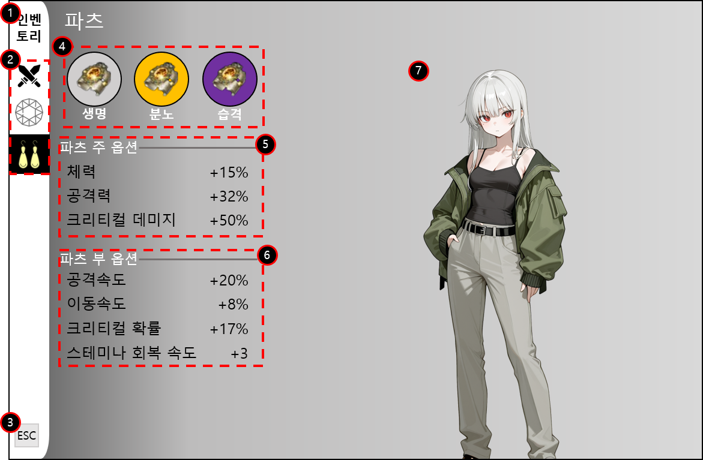
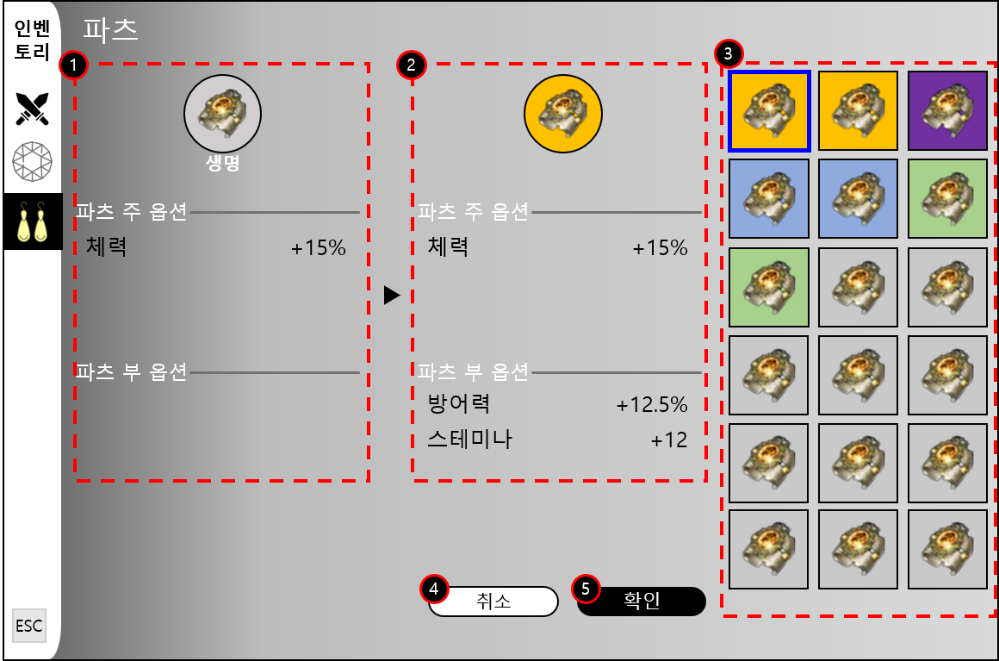
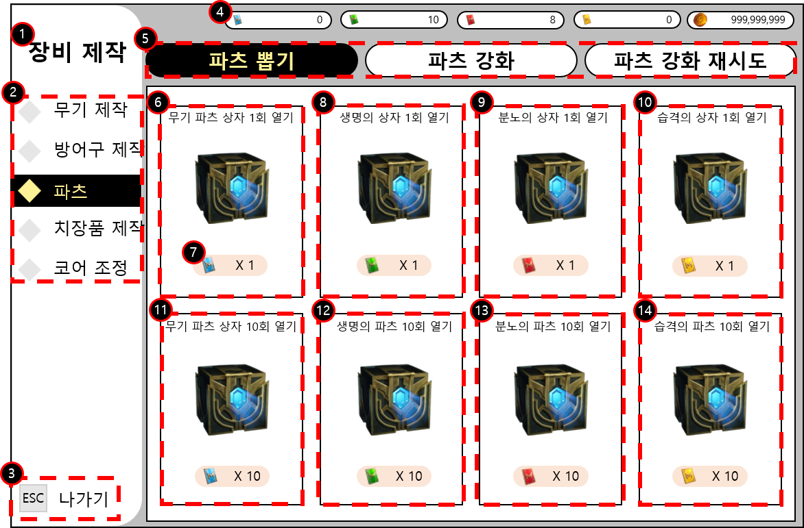
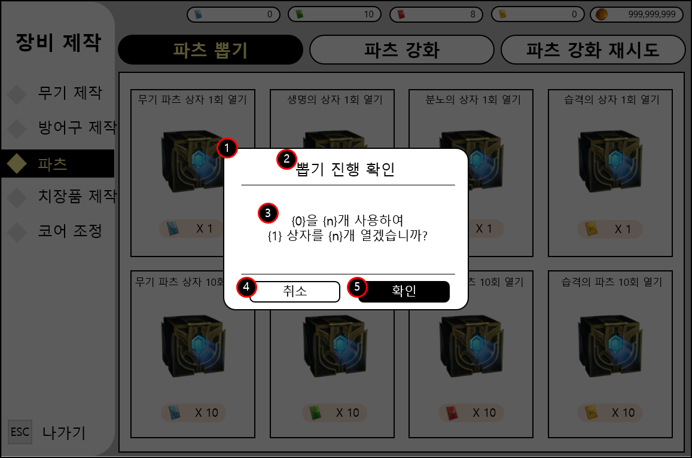
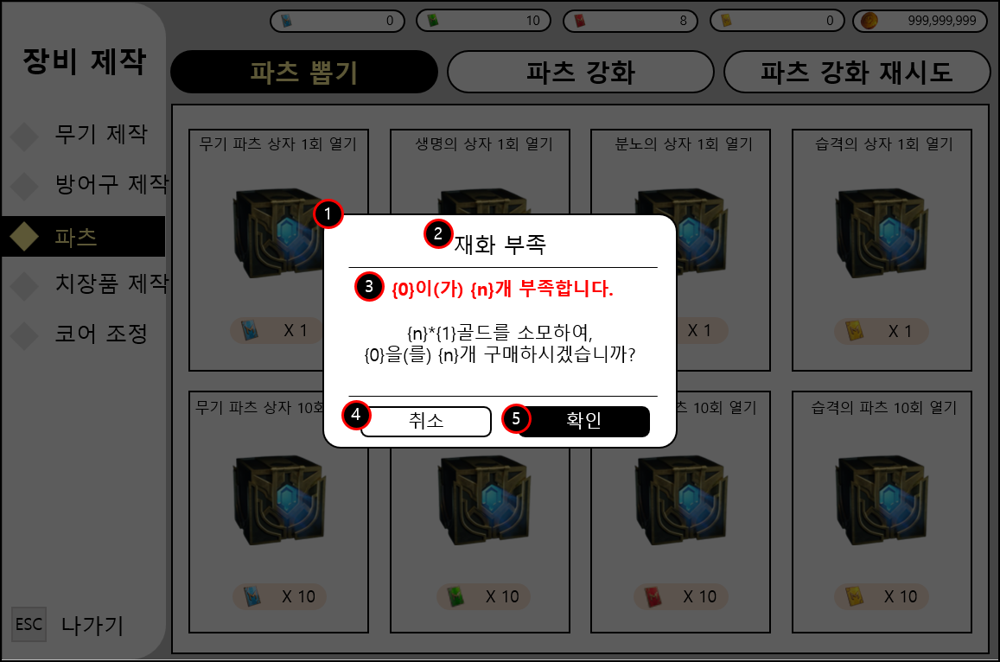
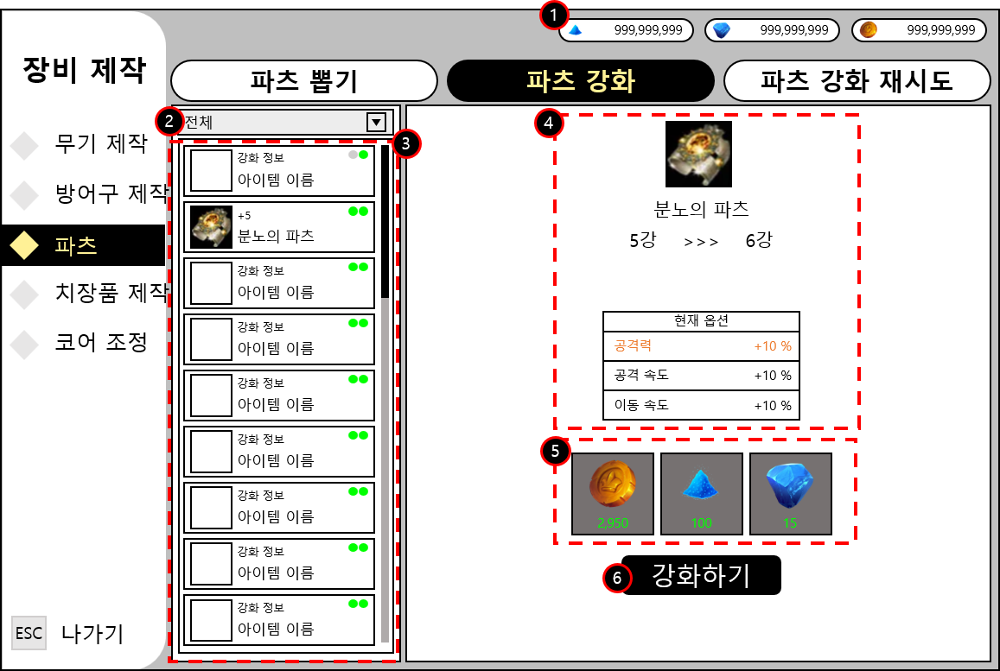
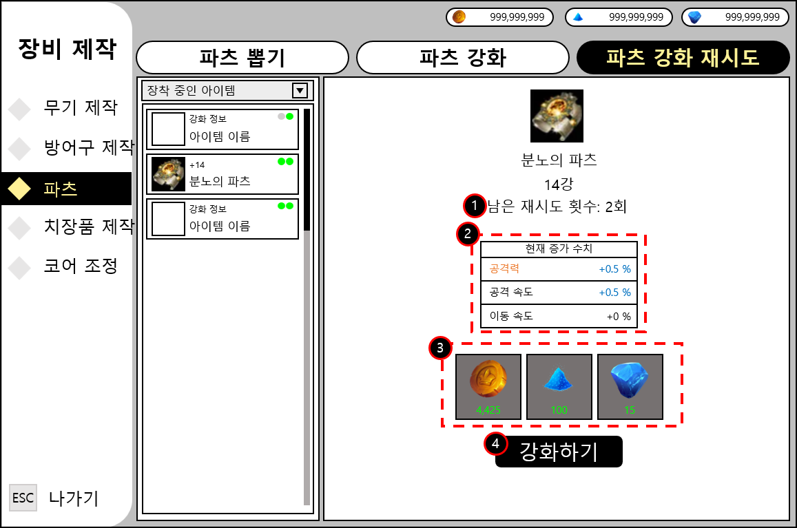
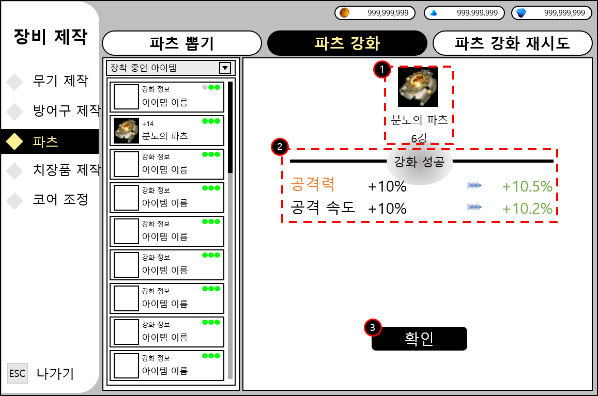

Project:RAID 파츠 시스템
1. 개요
1.1. 시스템 개요
| 분류 | 내용 |
|---|---|
| 시스템명 | Project:RAID 파츠 시스템 |
| 게임 / 장르 | Project:RAID / 헌팅 액션 RPG |
| 한줄 정의 | 무기에 장착하여 전투력을 보조하고 다양한 빌드 세팅의 기반이 되는 신규 장착물 시스템 |
1.2. 기획 의도
- 전투의 깊이와 전략성 강화 (유저 관점): 플레이어는 전투 중 획득한 파츠를 조합하여 자신만의 독창적인 전투 스타일을 완성합니다.
- 단순한 공격력/방어력 수치 상승을 넘어, 스킬 메커니즘을 보조하는 유의미한 옵션 조합 경험을 제공하여 지속적인 파밍의 동기와 목표를 부여합니다.
- 핵심 재화 소모처(Sink) 구축 (사업 관점): 파츠의 획득(뽑기)과 성장(강화) 과정에서 대량의 골드 및 전용 재화 소모를 필수적으로 동반하도록 설계하였습니다.
- 이러한 스펙업 욕구 자극은 자연스럽게 인게임 골드 구매 전환을 유도하며, 코어 유저 대상의 안정적인 뽑기 패키지 수익 창출로 직결됩니다.
2. 시스템 상세
2.1. 파츠 기본 구조
- 캐릭터의 스펙을 올려주는 무기 전용 악세사리 아이템입니다. (착용 시 별도의 캐릭터 외형 변화는 발생하지 않습니다.)
- 각 무기에는 총 3개의 파츠 전용 슬롯이 고정적으로 제공됩니다.
- 🩸 생명 슬롯 (Life)
- 🔥 분노 슬롯 (Fury)
- ⚡ 습격 슬롯 (Assault)
- 파츠의 옵션 구조는 [주 옵션 1종] + [부가 옵션 최대 2종]으로 세분화됩니다.
- 주 옵션: 파츠별 특수 옵션 풀에서 1종이 결정됩니다.
- 부가 옵션: 특수 옵션 및 공통 옵션 풀 내에서 2종이 결정됩니다.
하나의 동일한 파츠 안에서 주 옵션과 부가 옵션은 절대로 중복해서 등장하지 않습니다. 시스템 구현 시 옵션 롤링 테이블에서 중복 배제 로직 처리가 필수적입니다.
2.2. 성장 구조
2.2.1. 파츠 등급
파츠의 획득 등급에 따라 초기 옵션의 개수 및 최대 성장 수치의 한계가 달라지며, 이는 성장의 단계별 목표를 제시합니다.
| 등급 | 옵션 구성 | 설계 목적 및 주요 특징 |
|---|---|---|
| 일반 (Normal) | 주 옵션 1개 | 초반 구간 장착 학습 및 스펙업 기본 체험용 |
| 고급 (Advanced) | 주 옵션 1개 + 부가 옵션 1개 | 초중반 기본 파밍 단계 보상 |
| 희귀 (Rare) | 주 옵션 1개 + 부가 옵션 2개 | 부가 옵션이 2개로 고정되며, 하급 옵션이 등장하는 본격적인 빌드 세팅의 시작점 |
| 영웅 (Epic) | 주 옵션 1개 + 부가 옵션 2개 | 빌드 심화 단계. 중급 옵션까지 등장 가능 |
| 전설 (Legend) | 주 옵션 1개 + 부가 옵션 2개 | 최종 엔드 스펙 장비. 가장 강력한 상급 옵션까지 등장 가능 |
2.2.2. 옵션 등급
파츠를 최초 획득하여 옵션이 부여되는 시점에, 해당 옵션의 절대 수치가 하 / 중 / 상 3단계 등급으로 랜덤하게 결정됩니다.
옵션 상세 구성표
| 분류 | 등장 조건 | 옵션명 | 옵션 효과 | 등장 확률 | ||
|---|---|---|---|---|---|---|
| 하 | 중 | 상 | ||||
| 공통 옵션 | 모든 파츠에서 등장 | 체력 30% 이하일 때 공격력 증가 | 2.50% | 3.50% | 5% | 25% |
| 첫 타격 시 추가피해 | 50% | 75% | 150% | |||
| 적 처치 시 3초간 랜덤 버프 획득 (공속, 이속, 공, 방 증가) |
1.50% | 2.50% | 3.50% | |||
| 보스 피해 증가 | 1% | 2% | 3% | |||
| 파괴된 부위 공격 시 피해증가 | 2.50% | 3.50% | 5% | |||
| 적 타격 시 스테미나 회복 | 5 | 10 | 15 | |||
| 피격 시 경직 시간 감소 | 1.50% | 2% | 2.50% | |||
| 특수 옵션 | 생명 슬롯 | 최대 체력 증가 | 1% | 1.50% | 2.50% | 25% |
| 방어력 증가 | 1% | 1.25% | 2.50% | |||
| 스테미나 증가 | 1.25% | 1.50% | 2% | |||
| 분노 슬롯 | 공격력 증가 | 3.50% | 4.50% | 5% | ||
| 공격 속도 증가 | 2% | 2.50% | 3.25% | |||
| 이동 속도 증가 | 0.50% | 0.75% | 1% | |||
| 습격 슬롯 | 크리티컬 확률 증가 | 2.50% | 3.25% | 3.75% | ||
| 크리티컬 데미지 증가 | 5% | 6.50% | 7.50% | |||
| 스테미나 회복 속도 증가 | 1.25% | 1.50% | 2% | |||
2.2.3. 파츠 뽑기 (Gacha System)
뽑기 진행] ProbTable --> UpdateCount[천장 카운트 갱신] Ceiling -- "예" --> LegendGuar[전설 파츠 확정 지급] LegendGuar --> ResetCount[천장 카운트 초기화] UpdateCount --> PlayAnim[뽑기 연출 재생] ResetCount --> PlayAnim PlayAnim --> ConfirmAcq[확인 버튼 입력] ConfirmAcq --> Acquire[무기 파츠 획득] Acquire --> End([종료]) %% 스타일링 style Start fill:#fbc02d,stroke:#f9a825,color:#000 style End fill:#fbc02d,stroke:#f9a825,color:#000 style End_Cancel fill:#fbc02d,stroke:#f9a825,color:#000 style CheckTickets fill:#fff9c4,stroke:#fbc02d,color:#000 style Ceiling fill:#fff9c4,stroke:#fbc02d,color:#000 style Alert fill:#ffebee,stroke:#ef5350,color:#c62828 style Consume fill:#e3f2fd,stroke:#42a5f5,color:#1565c0 style ProbTable fill:#eceff1,stroke:#607d8b,color:#263238 style LegendGuar fill:#fff8e1,stroke:#ffa000,color:#000
파츠는 상점에서 전용 뽑기권을 소모하여 획득할 수 있으며, 각 상자별로 특화된 파츠 풀과 확률이 적용됩니다.
2.2.3.1. 파츠 상자 종류
| 상자 종류 | 소모 재화 | 등장 내용 |
|---|---|---|
| 무기 파츠 상자 | 무기 파츠 뽑기권 1개 소모 | 모든 종류의 파츠가 랜덤하게 등장합니다. (통합 뽑기) |
| 생명의 상자 | 생명의 파츠 뽑기권 1개 소모 | 생명의 파츠만 등장합니다. (타겟 뽑기) |
| 분노의 상자 | 분노의 파츠 뽑기권 1개 소모 | 분노의 파츠만 등장합니다. (타겟 뽑기) |
| 습격의 상자 | 습격의 파츠 뽑기권 1개 소모 | 습격의 파츠만 등장합니다. (타겟 뽑기) |
2.2.3.2. 파츠 등급별 뽑기 확률
| 분류 | 일반 | 고급 | 희귀 | 영웅 | 전설 |
|---|---|---|---|---|---|
| 무기 파츠 상자 | 30% | 25% | 20% | 15% | 10% |
| 생명/분노/습격의 상자 | 33% | 28% | 20% | 12% | 7% |
- 무기 파츠 상자: 20회 소환 시 확정으로 전설 등급 파츠가 등장합니다.
- 생명/분노/습격의 상자: 30회 소환 시 확정으로 전설 등급 파츠가 등장합니다.
2.2.4. 파츠 강화
데이터 조회)] -.-> QueryStep QueryStep --> CheckCurrency{보유 재화 ≥ 필요 재화} CheckCurrency -- "부족" --> DisableBtn[강화 버튼 비활성화] CheckCurrency -- "충분" --> Deduct[재화 차감
보유 재화 - 필요 재화] Deduct --> ServerReq[서버 강화 성공단계 요청] ServerReq --> IncStep[강화단계 증가] IncStep --> IncStat[강화 성공 단계 테이블 기반
주 옵션 / 부가옵션 1종 수치 증가] IncStat --> Anim[강화 결과 연출 출력] Anim --> ShowUI[강화 결과 UI 표시] ShowUI --> End([종료]) %% 스타일링 style Start fill:#fbc02d,stroke:#f9a825,color:#000 style End fill:#fbc02d,stroke:#f9a825,color:#000 style CheckCurrency fill:#fff9c4,stroke:#fbc02d,color:#000 style QueryData fill:#455a64,stroke:#263238,color:#fff style DisableBtn fill:#ffebee,stroke:#ef5350,color:#c62828 style Deduct fill:#e3f2fd,stroke:#42a5f5,color:#1565c0
파츠 강화는 기초 옵션 수치를 대폭 상승시키는 성장 시스템으로, 최대 6단계(6강)까지 진행할 수 있습니다.
- 성장 규칙: 1회 강화 성공 시 주 옵션과 부가 옵션 1종(무작위)의 수치가 함께 증가합니다.
- 강화 성공 단계 시스템: 강화를 시도할 때 (강화 버튼 클릭 시), 시스템 내부 확률에 의해 성공 단계가 총 5단계(일반/고급/희귀/영웅/전설) 중
하나로 판정됩니다. 이 판정된 등급이 높을수록 추가 상승되는 스탯 수치의 폭이 커집니다.

강화 성공 단계별 상승 수치표
분류 옵션명 강화 성공 단계별 상승 수치 일반 고급 희귀 영웅 전설 공통 옵션 체력 30% 이하일 때 공격력 증가 1.00% 2.00% 3.00% 4.00% 5.00% 첫 타격 시 추가피해 5.00% 10.00% 15.00% 20.00% 25.00% 적 처치 시 3초간 랜덤 버프 획득
(공속, 이속, 공, 방 증가)0.50% 1.00% 1.50% 1.75% 2.00% 보스 피해 증가 0.30% 0.55% 0.80% 1.05% 1.30% 파괴된 부위 공격 시 피해증가 0.20% 0.35% 0.50% 0.65% 0.83% 적 타격 시 스테미나 회복 0.5 1 1.5 1.75 2 피격 시 경직 시간 감소 0.20% 0.35% 0.50% 0.65% 0.83% 특수 옵션 최대 체력 증가 3.00% 5.00% 7.00% 10.00% 15.00% 방어력 증가 0.30% 0.55% 0.80% 1.05% 1.30% 스테미나 증가 0.50% 1.00% 1.50% 1.75% 2.00% 공격력 증가 0.20% 0.35% 0.50% 0.65% 0.83% 공격 속도 증가 0.20% 0.35% 0.50% 0.65% 0.83% 이동 속도 증가 0.20% 0.35% 0.50% 0.65% 0.83% 크리티컬 확률 증가 0.30% 0.55% 0.80% 1.05% 1.30% 크리티컬 데미지 증가 0.25% 0.50% 0.75% 1.00% 1.25% 스테미나 회복 속도 증가 0.10% 0.20% 0.30% 0.40% 0.50% - 강화 재시도 (리스크 관리):
- 강화를 마친 후, 결과가 만족스럽지 않다면 파츠당 단 2회에 한해 결과를 되돌리고 재도전할 수 있습니다.
- 조건: 강화 재시도는 오직 현재 강화 단계의 직전 단계로만 덮어쓰기 복구가 가능합니다.
- 예시) 현재 6강 상태에서 재도전 기회가 남은 경우: [5강 → 6강] 구간의 결과만 리롤할 수 있으며, 이미 확정된 [4강 → 5강] 구간의 결과를 재시도할 수는 없습니다.
2.2.5. 파츠 장착
데이터 조회)] -.-> SelectSlot[파츠 슬롯 선택] SelectSlot --> ShowInven[파츠 인벤토리 출력] ShowInven --> SelectPart[장착할 파츠 선택] SelectPart --> Cancel[취소 버튼 입력] Cancel --> Start SelectPart --> Confirm[확인 버튼 입력] Confirm --> CheckEmpty{빈 슬롯?} CheckEmpty -- "장착한 파츠 있음" --> Unequip[기존 장착된 파츠 해제] CheckEmpty -- "장착한 파츠 없음" --> Equip[선택한 파츠 장착] Unequip --> UpdateData[(tb_UserEquipParts
데이터 갱신)] Equip --> UpdateData UpdateData --> UpdateStat[능력치 갱신] UpdateStat --> End([종료]) %% 스타일링 style Start fill:#fbc02d,stroke:#f9a825,color:#000 style End fill:#fbc02d,stroke:#f9a825,color:#000 style CheckEmpty fill:#fff9c4,stroke:#fbc02d,color:#000 style QueryData fill:#455a64,stroke:#263238,color:#fff style UpdateData fill:#455a64,stroke:#263238,color:#fff style Unequip fill:#ffebee,stroke:#ef5350,color:#c62828 style Equip fill:#e3f2fd,stroke:#42a5f5,color:#1565c0
획득한 파츠를 무기의 전용 슬롯에 장착하여 성능을 활성화합니다. 각 슬롯은 고유한 타입을 가지며, 타입이 일치하는 파츠만 장착 가능합니다.
2.2.5.1. 슬롯 구성 및 타입 제한
| 슬롯 타입 | 장착 가능 파츠 | 설명 및 특화 분야 |
|---|---|---|
| 생명 슬롯 | 생명 파츠 | 생존 및 방어 성능에 특화된 파츠 장착 슬롯 |
| 분노 슬롯 | 분노 파츠 | 공격력 및 파괴력에 특화된 파츠 장착 슬롯 |
| 습격 슬롯 | 습격 파츠 | 치명타, 속도, 기동 성능에 특화된 파츠 장착 슬롯 |
- ✅ 가능: 생명 슬롯 ← 생명 파츠 / 분노 슬롯 ← 분노 파츠
- ❌ 불가능: 생명 슬롯 ← 습격 파츠 / 분노 슬롯 ← 생명 파츠
2.2.5.2. 장착 규칙 및 조건
| 조건 항목 | 상세 설명 |
|---|---|
| 슬롯 타입 일치 | 무기 슬롯의 타입과 파츠의 타입이 반드시 동일해야 장착이 가능합니다. |
| 보유 여부 확인 | 유저의 인벤토리에 실제로 존재하는 파츠여야 합니다. |
| 중복 장착 불가 | 하나의 파츠는 동시에 여러 슬롯에 장착될 수 없습니다. (교체 장착은 가능) |
| 잠금 파츠 지원 | 유저가 잠금(Lock) 처리한 파츠도 장착 및 해제가 가능합니다. (실수 방지용) |
- 타입 불일치 시 장착 버튼 비활성화 및 알림 출력
- 존재하지 않거나 데이터상 삭제된 파츠는 목록에서 제외
3. UI/UX 와이어프레임
3.1. 장착 및 관리 인벤토리 UI
3.1.1. 인벤토리 - 파츠

[참조: 인벤토리 - 파츠 UI (마우스 오버 시 확대)]
UI 상세 설명
| 번호 | 설명 및 기능 정의 |
|---|---|
| 1 | 타이틀 - 텍스트 > "인벤토리" > tb_Menu, $Name |
| 2 | 인벤토리 탭 메뉴 - 인벤토리 카테고리별 탭 버튼을 제공 > 탭 종류: 무기 탭, 코어 탭, 파츠 탭 - 현재 선택된 탭은 활성화 상태로 표시 > 선택된 탭 아이콘 강조 > 배경색: #000000 > 아이콘 색상: #fff196 > 비선택 탭은 기본 색상 유지 |
| 3 | 나가기 - 인벤토리 화면을 종료합니다. > 버튼 선택 시 이전 화면으로 이동 > 단축키 ESC 입력 시 동일 기능 수행 |
| 4 | 장착 파츠 정보 - 현재 장착 중인 파츠 정보를 출력 > 슬롯 아래에 슬롯 이름 표시 > tb_PartsType, $Name> 텍스트 색상: #000000 > Bold체 > 가운데 정렬 - 슬롯별 장착된 파츠 아이콘을 표시 > 장착한 파츠의 등급에 따른 배경 색상 적용 > 일반: #d0cece > 고급: #a9d18e > 희귀: #8faadc > 영웅: #7030a0 > 전설: #ffc000 - 슬롯을 클릭하여 작동 시, 3.1.2 화면으로 전환 |
| 5 | 파츠 주 옵션 정보 - 현재 장착된 파츠들의 주옵션 정보를 출력 > 옵션명 좌측 정렬 > 최대 12글자까지 표시 > 옵션명이 12글자 이상이여서 설명이 잘릴 경우 > 마우스 오버 시(길게 터치 시) 해당 옵션명을 툴팁으로 표시 > tb_PartsOption, $Name> 옵션 수치 우측 정렬 |
| 6 | 파츠 부가 옵션 정보 - 현재 장착된 파츠들의 부가 옵션 정보를 출력 > 옵션명 좌측 정렬 > 최대 12글자까지 표시 > 옵션명이 12글자 이상이여서 설명이 잘릴 경우 > 마우스 오버 시(길게 터치 시) 해당 옵션명을 툴팁으로 표시 > tb_PartsOption, $Name> 옵션 수치 우측 정렬 |
| 7 | 플레이 캐릭터 표시 - 현재 장착 중인 캐릭터 모델을 출력 > 캐릭터 대기 모션 출력 가능 |
3.1.2. 파츠 교체

[참조: 파츠 교체 UI (마우스 오버 시 확대)]
UI 상세 설명
| 번호 | 설명 및 기능 정의 |
|---|---|
| 1 | 현재 장착 파츠 정보 - 현재 슬롯에 장착 중인 파츠 정보를 출력 > 장착 파츠 아이콘 표시: tb_Item, $IconPath- 현재 장착된 파츠의 주 옵션 정보를 출력 - 현재 장착된 파츠의 부가 옵션 정보를 출력 |
| 2 | 선택 파츠 정보 - 인벤토리에서 선택한 파츠 정보를 출력 > 장착 파츠 아이콘 표시: tb_Item, $IconPath- 현재 장착된 파츠의 주 옵션 정보를 출력 - 현재 장착된 파츠의 부가 옵션 정보를 출력 - 유저가 인벤토리에서 선택한 파츠가 없을 경우 > 선택 파츠 정보를 표시하지 않음 (비활성화 처리) |
| 3 | 파츠 인벤토리 - 유저가 보유 중인 파츠 목록을 출력 > 해당 슬롯과 동일한 타입을 가진 파츠만 출력 > 그리드 형태로 출력: 4열 > 상하 스크롤 지원 - 파츠 등급에 따라 배경 색상 적용 > 일반: #d0cece > 고급: #a9d18e > 희귀: #8faadc > 영웅: #7030a0 > 전설: #ffc000 - 선택된 파츠는 강조 테두리를 출력 > 테두리 색상: #0000ff > 테두리 두께: 2px - 인벤토리 정렬 우선순위 > 장착 중인 파츠 → 등급 |
| 4 | 취소 버튼 - 작동 시, "선택 파츠 정보"를 비활성화 |
| 5 | 확인 버튼 - 작동 시, 현재 슬롯에 장착 중인 파츠를 선택한 파츠로 교체 - 위 인벤토리 정렬 우선순위에 맞게 재정렬 |
3.2. 상점 가챠 연출 및 결과창 UI
3.2.1. 파츠 상자 구매

[참조: 상점 뽑기 UI (마우스 오버 시 확대)]
UI 상세 설명
| 번호 | 설명 및 기능 정의 |
|---|---|
| 1 | 타이틀 - 텍스트 > "장비 제작" > tb_Menu, $Name |
| 2 | 카테고리 네비게이션 - 작동 시 선택한 UI로 진입 - 현재 진입 중인 카테고리는 아래 규칙에 따라 탭을 강조 > 배경 색상: #000000 > 아이콘 색상: #fff196 > 텍스트 색상: #fff196 - 비활성화 카테고리는 아래 규칙에 따라 출력 > 배경 색상: alpha 값: 0 > 아이콘 색상: #e7e6e6 > 텍스트 색상: #000000 |
| 3 | 나가기 - 대기 상태로 이동 |
| 4 | 보유 화폐 - 유저가 보유 중인, 파츠 뽑기권 관련 재화 출력 > tb_Currency, $IconPath> 숫자 우측정렬 > 출력되어야할 재화 종류 - 무기 파츠 뽑기권 - 생명의 파츠 뽑기권 - 분노의 파츠 뽑기권 - 습격의 파츠 뽑기권 - 골드 |
| 5 | 상단 탭 - 탭 클릭 시 해당 기능 화면으로 전환 - 선택된 탭은 활성화 상태로 유지 - 활성화 탭은 아래 규칙에 따라 탭을 강조 > 배경 색상: #000000 > 텍스트 색상: #fff196 - 현재 화면에 해당하는 탭은 중복 클릭 시 상태 변화 없음 |
| 6 | 무기 파츠 상자 1회 열기 - 무기 파치 열기 1회 시행버튼 - 작동 시, 00 팝업 메시지 출력 > 해당 팝업의 "확인" 버튼 작동 시 1회 뽑기 시행 > 작동 시, 파츠 뽑기 전용 재화 소모 > tb_PartsBox, $Requirement- 자원 부족한 경우, 00 팝업 메시지 출력 - 모든 종류의 파츠 등장 (생명, 분노, 습격) > 확률: 33.33%(분노,습격), 33.34%(생명) |
| 7 | 요구 재화 - 상자를 열기 위한 재화 표시 > 아이콘: tb_Currency, $IconPath> 재화 수량: tb_PartsBox, $Requirement |
| 8 | 생명의 상자 1회 열기 - 생명의 상자 열기 1회 시행버튼 - 작동 시, 00 팝업 메시지 출력 > 해당 팝업의 "확인" 버튼 작동 시 1회 뽑기 시행 > 작동 시, 파츠 뽑기 전용 재화 소모 > tb_PartsBox, $Requirement- 자원 부족한 경우, 00 팝업 메시지 출력 - 생명의 파츠만 등장 |
| 9 | 분노의 상자 1회 열기 - 분노의 상자 열기 1회 시행버튼 - 작동 시, 00 팝업 메시지 출력 > 해당 팝업의 "확인" 버튼 작동 시 1회 뽑기 시행 > 작동 시, 파츠 뽑기 전용 재화 소모 > tb_PartsBox, $Requirement- 자원 부족한 경우, 00 팝업 메시지 출력 - 분노의 파츠만 등장 |
| 10 | 습격의 상자 1회 열기 - 습격의 상자 열기 1회 시행버튼 - 작동 시, 00 팝업 메시지 출력 > 해당 팝업의 "확인" 버튼 작동 시 1회 뽑기 시행 > 작동 시, 파츠 뽑기 전용 재화 소모 > tb_PartsBox, $Requirement- 자원 부족한 경우, 00 팝업 메시지 출력 - 습격의 파츠만 등장 |
| 11 | 무기 파츠 상자 10회 열기 - 무기 파치 뽑기 10회 시행버튼 - 작동 시, 00 팝업 메시지 출력 > 해당 팝업의 "확인" 버튼 작동 시 10회 뽑기 시행 > 작동 시, 파츠 뽑기 전용 재화 소모 > tb_PartsBox, $Requirement- 자원 부족한 경우, 00 팝업 메시지 출력 - 모든 종류의 파츠 등장 (생명, 분노, 습격) > 확률: 33.33%(분노,습격), 33.34%(생명) |
| 12 | 생명의 상자 10회 열기 - 생명의 상자 열기 10회 시행버튼 - 작동 시, 00 팝업 메시지 출력 > 해당 팝업의 "확인" 버튼 작동 시 10회 뽑기 시행 > 작동 시, 파츠 뽑기 전용 재화 소모 > tb_PartsBox, $Requirement- 자원 부족한 경우, 00 팝업 메시지 출력 - 생명의 파츠만 등장 |
| 13 | 분노의 상자 10회 열기 - 분노의 상자 열기 10회 시행버튼 - 작동 시, 00 팝업 메시지 출력 > 해당 팝업의 "확인" 버튼 작동 시 10회 뽑기 시행 > 작동 시, 파츠 뽑기 전용 재화 소모 > tb_PartsBox, $Requirement- 자원 부족한 경우, 00 팝업 메시지 출력 - 분노의 파츠만 등장 |
| 14 | 습격의 상자 10회 열기 - 습격의 상자 열기 1회 시행버튼 - 작동 시, 00 팝업 메시지 출력 > 해당 팝업의 "확인" 버튼 작동 시 10회 뽑기 시행 > 작동 시, 파츠 뽑기 전용 재화 소모 > tb_PartsBox, $Requirement- 자원 부족한 경우, 00 팝업 메시지 출력 - 습격의 파츠만 등장 |
3.2.2. 구매 팝업
3.2.2.1. 뽑기 진행 확인 팝업

[참조: 뽑기 진행 확인 팝업 (마우스 오버 시 확대)]
UI 상세 설명
| 번호 | 설명 및 기능 정의 |
|---|---|
| 1 | 뽑기 진행 팝업 - 뽑기 실행 시, 뽑기 실행 확인 여부를 묻는 팝업 출력 > 의도하지 않은 입력으로 인한 실수 방지 > 행동 수행 전 결과를 명확히 인지 - 화면 중앙에 출력 |
| 2 | 팝업 제목 - 가운데 정렬 |
| 3 | 팝업 설명 - {0}: 소모될 재화 수 > tb_PartsBox, $Price- {n}: 유저가 열 상자의 개수 > tb_PartsBox, $Amount- {1}: 유저가 선택한 상자의 종류 > tb_PartsBox, $Type- 가운데 정렬 |
| 4 | 취소 버튼 - 팝업 닫기 버튼 |
| 5 | 확인 버튼 - 뽑기 실행 - 연출 화면 전환 |
3.2.2.2. 재화 부족 팝업

[참조: 재화 부족 팝업 (마우스 오버 시 확대)]
UI 상세 설명
| 번호 | 설명 및 기능 정의 |
|---|---|
| 1 | 재화 부족 팝업 - 뽑기 실행 시, 재화(뽑기권)이 부족한 경우 출력 > 유저가 재화 부족으로 인해 구매 이탈을 방지하기 위한 팝업 > 재화를 살 골드 부족 시 골드 구매 창으로 전환하여, 골드 구매를 유도하기 위함 - 화면 중앙에 출력 |
| 2 | 팝업 제목 - 가운데 정렬 |
| 3 | 팝업 설명 - {0}: 소모될 재화(뽑기권) 수 > tb_PartsBox, $Price- {n}: 부족한 재화의 수 > 상자 구매를 위한 재화 - 현재 유저가 보유 중인 재화 > tb_PartsBox, $Amount- {1}: 뽑기권 구매 비용 > tb_Currency, $Price- 가운데 정렬 |
| 4 | 취소 버튼 - 팝업 닫기 버튼 |
| 5 | 확인 버튼 - 구매 확인 버튼 1. 보유한 골드 >= 필요 골드 - 재화 구매 후, 뽑기 연출 화면 전환 2. 보유한 골드 < 필요 골드 - 골드 구매 화면 전환 |
3.2.3. 결과 창
(내용 작성 예정 - 빈 섹션)
3.3. 파츠 강화 및 성공/실패 연출 UX
3.3.1. 파츠 강화

[참조: 파츠 강화 UI (마우스 오버 시 확대)]
UI 상세 설명
| 번호 | 설명 및 기능 정의 |
|---|---|
| 1 | 보유 화폐 - 유저가 보유 중인, 파츠 강화 재료 관련 재화 출력 > tb_Currency, $IconPath> 숫자 우측정렬 > 출력되어야할 재화 종류 - 마정 가루 - 마정석 - 골드 |
| 2 | 아이템 표시 드롭다운 - 리스트에 표시될 기준을 설정 > 전체: 유저가 보유중인 파츠 정보를 불러옵니다. > 장착 중인 아이템: 유저가 보유중인 파츠 중 장착하고 있는 파츠의 정보만을 불러옵니다. |
| 3 | 아이템 리스트 - 플레이어가 보유중인 파츠의 정보 출력 - 아이템 표시 드롭다운의 조건에 따라 정보를 표시 > 전체: 유저가 보유중인 파츠 정보를 불러옵니다. > 장착 중인 아이템: 유저가 보유중인 파츠 중 장착하고 있는 파츠의 정보만을 불러옵니다. - 리스트 정렬 기준 > 공통: 아이템 인덱스를 기준으로 오름차순 출력 > 전체: 유저가 장착중인 파츠 → 보유중인 파츠 순서로 표시 > 인덱스가 동일할 경우, 옵션의 인덱스에 기준에 따라 오름차순 출력 - 리스트 아이템 정보 > tb_Item, $IconPath, $Name, $enforce, $RetryCount> 강화 재시도 횟수( $RetryCount)에 따라 재시도 남은 횟수 표시
강조> 남은 횟수 만큼 #00ff00 색으로 표시 > 소모된 횟수 만큼 #d0cece 색으로 표시 |
| 4 | 선택한 파츠 정보 출력 - 아이템 정보 > tb_Item, $IconPath, $Name, $enforce, $Option(1,2,3)
|
| 5 | 강화 재화 - 강화에 필요한 재화 출력 > tb_Item, $IconPath- 필요 재화 수 > 아이템 아이콘 하단부에 표시 (가운데 정렬) > tb_PartsEnhance, $DemonicDust, $DemonicCrystal, $Gold> 현재 선택된 파츠의 강화단계를 참조하여 테이블에서 값을 가져옵니다. > 재화가 부족할 경우 텍스트 색을 #ff0000로 변경하여 강조 |
| 6 | 강화 버튼 - 작동 시, 강화 연출 진행 > 강화 성공 단계를 서버에서 계산 후 클라이언트로 결과 전달 > 유저 보유 재화를 요구 재화만큼 차감 - 유저 보유한 재화 < 요구 재화 > 버튼 비활성화 > 버튼 색상: #d0cece > 텍스트 색상: #000000 |
3.3.2. 파츠 재강화

[참조: 파츠 재강화 UI (마우스 오버 시 확대)]
UI 상세 설명
| 번호 | 설명 및 기능 정의 |
|---|---|
| 1 | 남은 재시도 횟수 - 현재 선택한 파츠의 남은 재시도 횟수를 출력 |
| 2 | 현재 단계에서 적용된 강화 수치 - 현재 선택한 파츠의 강화 단계에서 적용 중인 옵션 증가 수치를 출력합니다. > 강화 단계에 따라 증가된 옵션 수치를 리스트 형태로 표시 > 표시 대상: 공격력, 공격 속도, 이동 속도 등 현재 파츠에 적용된 옵션 > 증가 수치는 % 단위로 출력 > 증가된 수치는 우측 정렬하여 표시 > 상승 적용 중인 수치는 강조 색상 적용 (#ff8a00) > 옵션 수치 정보는 현재 선택된 파츠의 강화 단계 데이터를 참조 > tb_PartsOption 테이블에서 현재 강화 단계의 증가 수치 데이터를
가져옵니다. |
| 3 | 강화 재화 - 강화에 필요한 재화 출력 > tb_Item, $IconPath- 필요 재화 수 > 아이템 아이콘 하단부에 표시 (가운데 정렬) > tb_PartsEnhance, $DemonicDust, $DemonicCrystal, $Gold> 현재 선택된 파츠의 강화단계를 참조하여 테이블에서 값을 가져옵니다. > 재화가 부족할 경우 텍스트 색을 #ff0000로 변경하여 강조 |
| 4 | 강화 버튼 - 작동 시, 강화 연출 진행 > 강화 성공 단계를 서버에서 계산 후 클라이언트로 결과 전달 > 유저 보유 재화를 요구 재화만큼 차감 - 유저 보유한 재화 < 요구 재화 > 버튼 비활성화 > 버튼 색상: #d0cece > 텍스트 색상: #000000 |
3.3.3. 파츠 강화 결과창

[참조: 파츠 강화 결과창 UI (마우스 오버 시 확대)]
UI 상세 설명
| 번호 | 설명 및 기능 정의 |
|---|---|
| 1 | 강화 대상 정보 - 강화가 진행된 파츠 정보를 출력합니다. > 파츠 아이콘 출력 > 파츠 이름 출력 > 강화 완료 단계 출력 |
| 2 | 강화 결과 상태 - 강화 결과 메시지를 중앙에 출력합니다. > 결과 상태에 따라 연출 및 텍스트 색상 변경 > "강화 성공" 배경: 강화 성공 단계별 등급과 동일한 색상으로 표시 > 증가 수치 텍스트: 강화 성공 단계별 등급과 동일한 색상으로 표시 |
| 3 | 확인 버튼 - 강화 결과 화면을 종료 > 버튼 선택 시 이전 강화 화면으로 이동 > 결과 연출 종료 후 입력 가능 상태로 변경 - 결과 연출 진행 중에는 비활성화 > 연출 종료 후 버튼 활성화 > 버튼 색상: #000000 > 텍스트 색상: #ffffff |
4. 데이터 테이블 구조 (Data Table)
4.1. 테이블 관계도
erDiagram
tb_Parts ||--o| tb_PartsOptionGroup : "Option Group"
tb_Parts ||--o{ tb_PartsEnhance : "Enhance Data"
tb_PartsOptionGroup ||--o{ tb_PartsMainOption : "Main Options"
tb_PartsOptionGroup ||--o{ tb_PartsSubOption : "Sub Options"
tb_PartsMainOption ||--|| tb_PartsOption : "Reference"
tb_PartsSubOption ||--|| tb_PartsOption : "Reference"
tb_UserParts ||--o{ tb_UserPartsOption : "Options"
tb_UserPartsOption ||--|| tb_PartsOption : "Reference"
tb_UserParts ||--o| tb_UserEquipParts : "Equip State"
tb_UserInventory ||--|| tb_Item : "Item Link"
tb_UserParts }|--|| tb_Parts : "Instance of"
tb_Parts {
int PartsID PK
varchar PartsName
tinyint PartsType
tinyint Grade
varchar IconPath
int MainOptionGroupID FK
int SubOptionGroupID FK
int MaxEnhance
int SellGold
boolean IsActive
}
tb_PartsOptionGroup {
int OptionGroupID PK
tinyint GroupType
tinyint PartsType
}
tb_PartsOption {
int OptionID PK
varchar OptionName
tinyint OptionType
enum OptionGrade
varchar Desc
boolean IsActive
}
tb_PartsMainOption {
int ID PK
int OptionGroupID FK
int OptionID FK
tinyint OptionGrade
}
tb_PartsSubOption {
int ID PK
int OptionGroupID FK
int OptionID FK
tinyint OptionGrade
}
tb_PartsEnhance {
int EnhanceLevel PK
int DemonicDust
int DemonicCrystal
int Gold
int SuccessLevel
int RetryCount
}
tb_Item {
int ItemID PK
varchar ItemName
tinyint ItemType
varchar IconPath
tinyint Grade
}
tb_UserParts {
long UserPartsID PK
long UserID FK
int PartsID FK
int EnhanceLevel
int RetryCount
boolean IsLocked
datetime CreatedAt
}
tb_UserPartsOption {
long UserPartsOptionID PK
long UserPartsID FK
int OptionID FK
float OptionValue
boolean IsMain
}
tb_UserInventory {
long UserID PK
int ItemID PK, FK
long Count
}
tb_UserEquipParts {
long UserID PK
long CharacterID PK
long LifePartsID FK
long RagePartsID FK
long AssaultPartsID FK
}
4.2. 테이블 상세 정의
4.2.1. 파츠 정보 (tb_Parts)
| 컬럼명 | 타입 | 설명 | 제약사항 |
|---|---|---|---|
| PartsID | INT | 파츠 고유 ID | PK, NOT NULL |
| PartsName | VARCHAR(16) | 파츠 이름 | NOT NULL |
| PartsType | TINYINT | 1: 생명, 2: 분노, 3: 습격 | NOT NULL |
| Grade | TINYINT | 1: 일반, 2: 고급, 3: 희귀, 4: 영웅, 5: 전설 | NOT NULL |
| IconPath | VARCHAR(300) | 아이콘 경로 | NOT NULL |
| MainOptionGroupID | INT | 주 옵션 그룹 ID | NOT NULL, FK(tb_PartsOptionGroup.OptionGroupID) |
| SubOptionGroupID | INT | 부가 옵션 그룹 ID | FK(tb_PartsOptionGroup.OptionGroupID) |
| MaxEnhance | INT | 최대 강화 단계 | NOT NULL, DEFAULT 6 |
| SellGold | INT | 판매 가격 | NOT NULL, DEFAULT 0 |
| IsActive | BOOLEAN | 사용 여부 | NOT NULL, DEFAULT TRUE |
4.2.2. 파츠 옵션 그룹 (tb_PartsOptionGroup)
| 컬럼명 | 타입 | 설명 | 제약조건 |
|---|---|---|---|
| OptionGroupID (PK) | INT | 옵션 그룹 ID | PK, NOT NULL |
| GroupType | TINYINT | 1: Main, 2: Sub | NOT NULL |
| PartsType | TINYINT | 1: 생명, 2: 분노, 3: 습격 | NOT NULL |
4.2.3. 파츠 옵션 (tb_PartsOption)
| 컬럼명 | 타입 | 설명 | 제약조건 |
|---|---|---|---|
| OptionID (PK) | INT | 옵션 ID | PK, AUTO_INCREMENT, NOT NULL |
| OptionName | VARCHAR(16) | 옵션 이름 | NOT NULL, UNIQUE |
| OptionType | TINYINT | 1: Normal, 2: Special | NOT NULL |
| OptionGrade | ENUM | 1: 희귀, 2: 영웅, 3: 전설 | NOT NULL |
| Desc | VARCHAR(300) | 옵션 설명 | |
| IsActive | BOOLEAN | 사용 여부 | NOT NULL, DEFAULT TRUE |
4.2.4. 파츠 주 옵션 (tb_PartsMainOption)
| 컬럼명 | 타입 | 설명 | 제약조건 |
|---|---|---|---|
| ID (PK) | INT | 고유값 | PK, AUTO_INCREMENT, NOT NULL |
| OptionGroupID (FK) | INT | 옵션 그룹 | NOT NULL, FK(tb_PartsOptionGroup.OptionGroupID) |
| OptionID (FK) | INT | 옵션 ID | NOT NULL, FK(tb_PartsOption.OptionID) |
| OptionGrade | TINYINT | 1: 희귀, 2: 영웅, 3: 전설 | NOT NULL |
4.2.5. 파츠 부가 옵션 (tb_PartsSubOption)
| 컬럼명 | 타입 | 설명 | 제약조건 |
|---|---|---|---|
| ID (PK) | INT | 고유값 | PK, NOT NULL |
| OptionGroupID (FK) | INT | 옵션 그룹 | NOT NULL, FK(tb_PartsOptionGroup.OptionGroupID) |
| OptionID (FK) | INT | 옵션 ID | NOT NULL, FK(tb_PartsOption.OptionID) |
| OptionGrade | TINYINT | 1: 희귀, 2: 영웅, 3: 전설 | NOT NULL |
4.2.6. 파츠 강화 (tb_PartsEnhance)
| 컬럼명 | 타입 | 설명 | 제약조건 |
|---|---|---|---|
| EnhanceLevel (PK) | INT | 강화 단계 | PK, NOT NULL |
| DemonicDust | INT | 필요 가루 | NOT NULL, DEFAULT 0 |
| DemonicCrystal | INT | 필요 결정 | NOT NULL, DEFAULT 0 |
| Gold | INT | 필요 골드 | NOT NULL, DEFAULT 0 |
| SuccessLevel | INT | 강화 성공 단계 | NOT NULL, DEFAULT 1 |
| RetryCount | INT | 재시도 가능 횟수 | NOT NULL, DEFAULT 2 |
4.2.7. 아이템 테이블 (tb_Item)
| 컬럼명 | 타입 | 설명 | 제약조건 |
|---|---|---|---|
| ItemID (PK) | INT | 아이템 ID | PK, NOT NULL |
| ItemName | VARCHAR(16) | 이름 | NOT NULL |
| ItemType | TINYINT | 재화 / 파츠 / 재료 | NOT NULL |
| IconPath | VARCHAR(300) | 아이콘 | NOT NULL |
| Grade | TINYINT | 등급 | NOT NULL |
4.2.8. 유저 파츠 (tb_UserParts)
| 컬럼명 | 타입 | 설명 | 제약조건 |
|---|---|---|---|
| UserPartsID (PK) | LONG | 유저 파츠 ID | PK, NOT NULL |
| UserID | LONG | 유저 ID | FK(tb_User.UserID) |
| PartsID (FK) | INT | 파츠 원본 ID | NOT NULL, FK(tb_Parts.PartsID) |
| EnhanceLevel | INT | 강화 단계 | NOT NULL, DEFAULT 0 |
| RetryCount | INT | 남은 재시도 | NOT NULL, DEFAULT 0 |
| IsLocked | BOOLEAN | 잠금 여부 | NOT NULL, DEFAULT FALSE |
| CreatedAt | DATETIME | 획득 시간 | NOT NULL, DEFAULT CURRENT_TIMESTAMP |
4.2.9. 유저 파츠 옵션 (tb_UserPartsOption)
| 컬럼명 | 타입 | 설명 | 제약조건 |
|---|---|---|---|
| UserPartsOptionID (PK) | LONG | 고유 ID | PK, AUTO_INCREMENT, NOT NULL |
| UserPartsID (FK) | LONG | 유저 파츠 | NOT NULL, FK(tb_UserParts.UserPartsID) |
| OptionID (FK) | INT | 옵션 | NOT NULL, FK(tb_PartsOption.OptionID) |
| OptionValue | FLOAT | 실제 수치 | NOT NULL |
| IsMain | BOOLEAN | 주 옵션 여부 | NOT NULL, DEFAULT FALSE |
4.2.10. 유저 인벤토리 (tb_UserInventory)
| 컬럼명 | 타입 | 설명 | 제약조건 |
|---|---|---|---|
| UserID | LONG | 유저 ID | PK, NOT NULL |
| ItemID | INT | 아이템 ID | PK, NOT NULL, FK(tb_Item.ItemID) |
| Count | LONG | 보유 수량 | NOT NULL, DEFAULT 0, CHECK(Count >= 0) |
4.2.11. 유저 장착 파츠 (tb_UserEquipParts)
| 컬럼명 | 타입 | 설명 | 제약조건 |
|---|---|---|---|
| UserID | LONG | 유저 ID | PK, NOT NULL |
| CharacterID | LONG | 캐릭터 ID | PK, NOT NULL |
| LifePartsID | LONG | 생명 파츠 | FK(tb_UserParts.UserPartsID) |
| RagePartsID | LONG | 분노 파츠 | FK(tb_UserParts.UserPartsID) |
| AssaultPartsID | LONG | 습격 파츠 | FK(tb_UserParts.UserPartsID) |
4.2.12. 파츠 타입 정보 (tb_PartsType)
| PartsType | Name | Description |
|---|---|---|
| 1 | LIFE | 생명 |
| 2 | RAGE | 분노 |
| 3 | ASSAULT | 습격 |
4.2.13. 등급 정보 (tb_Grade)
| Grade | Name | Description |
|---|---|---|
| 1 | NORMAL | 일반 |
| 2 | ADVANCED | 고급 |
| 3 | RARE | 희귀 |
| 4 | EPIC | 영웅 |
| 5 | LEGENDARY | 전설 |
4.2.14. 그룹 타입 정보 (tb_GroupType)
| GroupType | Name | Description |
|---|---|---|
| 1 | Main | 주 옵션 |
| 2 | Sub | 부가 옵션 |
4.2.15. 옵션 등급 정보 (tb_OptionGrade)
| Grade | Name | Description |
|---|---|---|
| 1 | RARE | 희귀 |
| 2 | EPIC | 영웅 |
| 3 | LEGENDARY | 전설 |